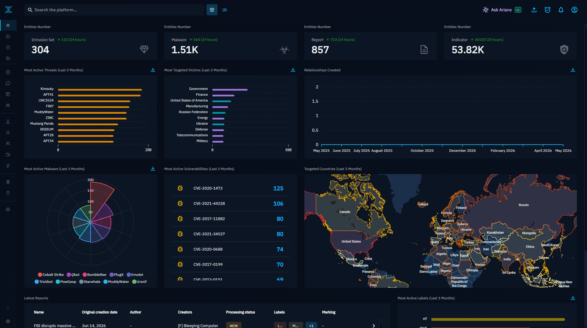

Wazuh + OpenCTI Threat Intelligence Integration¶

This project connects a Wazuh Manager to the OpenCTI threat‑intelligence platform so that indicators of compromise (IoCs) detected on your endpoints are checked, in real time, against your CTI database. When a hash, IP address, domain, hostname or URL observed by Wazuh matches something stored in OpenCTI, Wazuh raises an enriched alert that carries the indicator name, score, confidence, labels, marking (TLP), the creating organization and direct links back into the OpenCTI dashboard.
-
IoC Detection
Automatic identification of indicators of compromise on your endpoints.
-
CTI Enrichment
Queries OpenCTI in real time to retrieve threat intelligence on detected IoCs.
-
Enriched Alerts
Generates alerts with additional context for faster, better response.
-
Greater Context
More information for SOC analysts and better decision making.
What this project adds
This integration takes you from basic alerts to alerts contextualized with threat intelligence, improving the visibility, prioritization and response to security incidents.
Tested environment¶
| Component | Version tested | Notes |
|---|---|---|
| Wazuh Manager | 4.14.5 | Also verified on earlier 4.x releases |
| OpenCTI | 7.2 (and 6.x) | Upstream misje targeted 5.12.24 only |
| Sysmon | 4.90 schema | Windows endpoints |
| Endpoint OS | Windows 10/11, Linux | Linux via auditd / packetbeat |
How it fits together¶
1. An agent forwards an event (a Sysmon detection, a file‑integrity change, a DNS query…) to the Manager. 2. A Wazuh rule tags the event with a group the integration listens for. 3. The integration extracts the IoC (SHA‑256, IP, domain, hostname or URL) and queries OpenCTI over GraphQL. 4. If OpenCTI knows the IoC, the script emits a new event that Wazuh turns into an OpenCTI alert with a severity that depends on the match type.
Key features¶
| Capability | juaromu | misje | This fork |
|---|---|---|---|
| Observable lookup | |||
| Indicator lookup & STIX patterns | |||
| Event types (match classification) | (4) | (6) | |
| OpenCTI version | pre‑5 syntax | 5.12.24 | 6.x / 7.x |
| Group matching | by position | exact string | regex (both schemes) |
| Command‑line IoC extraction (EID 1) | new | ||
observable_only alert type |
new |
Next steps¶
-
Check what you need before installing.
-
Full walkthrough from zero to a working alert.
-
Feature comparison against upstream projects.
Credentials
The OpenCTI API token is a sensitive secret. Throughout this documentation it
is shown as a placeholder (REPLACE-ME-WITH-A-VALID-TOKEN). Never commit a
real token to a public repository or paste it into a published site.